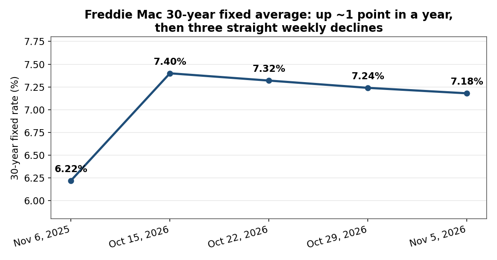
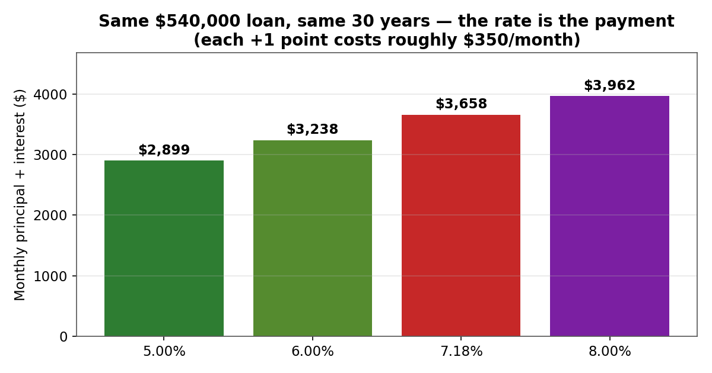
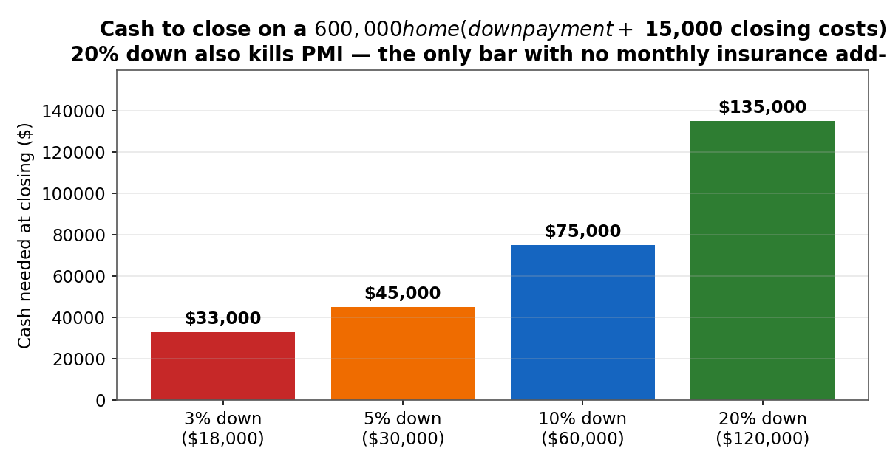

Yes, you can buy a house on an H-1B. US law puts no citizenship or immigration-status restriction on owning property. But the loan menu changed in 2025, the rate is 7.18%, and the visa adds risks a citizen buyer never has to think about — a 60-day clock if you lose your job, a renewal date a lender will ask about, and a mortgage that does not pause if your status does. This post is the full picture: which loans are open to you, what the payment actually looks like, and the mistakes that cost H-1B buyers the most.
All figures are current as of November 2026: Freddie Mac's Primary Mortgage Market Survey (November 5, 2026), FHFA's 2026 conforming loan limits, and HUD Mortgagee Letter 2025-09.
The 2025 change most H-1B buyers missed
For years, the standard advice was: H-1B holders can get an FHA loan with 3.5% down. That advice is now wrong. HUD Mortgagee Letter 2025-09, effective for FHA case numbers assigned on or after May 25, 2025, limits new FHA-insured loans to US citizens, lawful permanent residents, and citizens of Micronesia, the Marshall Islands, and Palau. Non-permanent residents — H-1B, L-1, TN, F-1, DACA — no longer qualify for new FHA loans. Existing FHA loans are unaffected, and if your case number was assigned before May 25, 2025, you proceed under the old rules. But if you are shopping today, FHA is off the table until you hold a green card.
What still works:
- Conventional loans (Fannie Mae / Freddie Mac). Fannie Mae's Selling Guide still covers lawful non-permanent residents on the same terms as citizens — the lender verifies your lawful presence from documents it deems appropriate (typically your I-94, I-797 approval notice, and SSN). This is now the main agency route for H-1B buyers.
- Non-QM / portfolio loans. Some lenders will lend outside agency rules, usually at higher rates and with 20–40% down. A fallback, not a first choice.
- Cash. No restriction at all — but it ties up the capital that is also your layoff buffer (see the emergency-fund post).
One more door that is mostly closed: many state and local down-payment assistance programs require citizenship or permanent residence. Check the program's rules before counting on it — California's CalHFA, for example, is stricter than Fannie Mae.
What lenders actually ask for
A conventional lender underwriting an H-1B borrower wants the same financials as anyone else, plus proof your status is stable:
- Valid I-94 and I-797, with ideally at least 1 year of visa validity remaining. Many lenders prefer to see an approved I-140 — it signals your employer is invested in keeping you.
- SSN and a US credit history — typically 12–24 months of it. New arrivals with thin files get worse pricing or denials; a secured card and a year of on-time payments before you shop is the cheapest fix.
- 2 years of documented US work history (W-2s, pay stubs, employer letter). RSU income counts only if your lender can document it — bring vest confirmations, not just a brokerage screenshot.
- Debt-to-income ratio (DTI) at or under ~45–50%. Your housing payment plus all other debts, divided by gross monthly income. Student loans, car payments, and credit-card minimums all count.
Lender overlays vary: one lender may want 2 years of tax returns, another may accept one. If the first lender balks at your visa, a second lender may not — get three Loan Estimates on the same day and compare them side by side.
The rate, and what it does to your payment
Freddie Mac's survey put the 30-year fixed average at 7.18% for the week ending November 5, 2026 — down from 7.40% on October 15, but still nearly a full point above the 6.22% of a year ago. The 15-year fixed averaged 6.57%.

The rate is the payment. On a $540,000 loan over 30 years:

At 7.18%, the difference between 5% and 8% on the same loan is $1,063 a month — $12,756 a year — for the same house. That is why the rate-shopping advice in every finance post is not filler: a quarter-point better quote is worth about $90 a month on this loan, every month, for 30 years.
The worked example: a $600,000 home, 10% down
Take a $600,000 purchase — roughly the price of a starter duplex or condo in many H-1B-heavy metros outside the Bay Area core — with 10% down and a 30-year fixed at 7.18%:
| Line item | Monthly |
|---|---|
| Principal + interest ($540,000 loan) | $3,658 |
| Property tax (~1.1%/yr) | ~$550 |
| Homeowners insurance | ~$250 |
| PMI (~0.6%/yr on the loan) | ~$270 |
| Total | ~$4,728 |
Three things to notice:
- The payment is not the mortgage. P&I is 77% of the monthly cost. Taxes, insurance, and PMI add $1,070 — budget the whole number, not the headline rate.
- PMI is the tax on a small down payment. Put less than 20% down on a conventional loan and you pay private mortgage insurance — roughly 0.5–1% of the loan per year — until you reach 20% equity, at which point you can ask to drop it. On this loan that is ~$270 a month, ~$3,240 a year, for years.
- 20% down changes the math twice. A $480,000 loan at 7.18% is $3,252 a month in P&I — $406 less than the 10%-down loan — and there is no PMI at all. The catch is the cash: $120,000 down instead of $60,000.

And the cash to close is not the whole cash picture. Closing costs run roughly 2–3% of the price (~$15,000 here), and you still need your layoff buffer intact afterwards — on an H-1B, the 60-day grace period after a layoff means 6 months of reserves is the floor, not the aspiration. A buyer who empties savings for the down payment and then loses their job has a mortgage, no income, and 60 days.
The tax side: real, but smaller than the sales pitch
- Mortgage interest deduction: interest on up to $750,000 of acquisition debt is deductible if you itemize — and the One Big Beautiful Bill Act made that $750,000 cap permanent. On a $540,000 loan at 7.18%, first-year interest is roughly $38,500. But you only benefit if your itemized deductions beat the 2026 standard deduction: $32,200 joint / $16,100 single. At these rates, mortgage interest plus property tax usually clears that bar for a buyer — run your own Schedule A before counting the deduction.
- SALT cap: the 2026 cap is $40,400, but it phases down for higher earners (above $505,000 of MAGI) to a $10,000 floor. If you are a high earner in California, do not assume the full $40,400.
- PMI is deductible again for 2026, with an income phase-out starting at $100,000 of AGI — at most H-1B tech incomes, that phase-out eats the whole deduction. Don't count it.
- The $250,000/$500,000 capital-gains exclusion on a primary residence still applies — but only if you have owned and lived in the home 2 of the last 5 years. Sell early because a visa didn't renew, and the exclusion may not be there.
The H-1B-specific risks nobody puts in the listing
- The 60-day clock. Lose your job and you have 60 days (or until your I-94 expires, whichever is shorter) to find a new sponsor, change status, or leave. A mortgage payment does not pause. This is the single biggest reason to keep the 6-month reserve untouched by the down payment — and to buy a payment you can carry on one income if your household has two.
- Primary residence means primary residence. A conventional loan priced as a primary residence requires you to move in within 60 days and live there for at least a year. Buying a "primary residence" you intend to rent out from day one is occupancy fraud — the same misrepresentation that makes the "second home as a rental" play illegal (18 U.S.C. §1014). If you want a rental property, price it as an investment property: higher rate, higher down payment (typically 25%), different underwriting.
- Leaving the US does not end the mortgage. If you depart, you can keep the house, rent it out, and file a US tax return on the rental income — the mortgage still has to be paid, from abroad, in dollars. Have a US bank account, a property manager, and a tax preparer lined up before you need them, not after.
- Renewal timing matters. Buying in the last year of your H-1B, before an extension is filed, is the hardest time to get approved — and the riskiest time to take on a 30-year obligation. If your extension is pending, tell your lender early; some will wait for the approval, some won't.
- Your rate is not the survey rate. Freddie Mac's 7.18% assumes 20% down and excellent credit. A smaller down payment, a thinner credit file, or a duplex instead of a single-family home can each add to your rate. The only number that matters is the one on your Loan Estimate.
What not to do
- Don't plan around FHA. It closed to non-permanent residents on May 25, 2025. Any article, video, or agent still quoting 3.5% down for H-1B buyers is working from pre-2025 rules.
- Don't drain your layoff buffer for the down payment. A house with no reserves is a 60-day countdown to a forced sale.
- Don't buy a "primary residence" you plan to rent. Occupancy misrepresentation on a federally backed loan is mortgage fraud.
- Don't take the first lender's word on your visa. Lender overlays differ wildly on H-1B files — a denial from one lender is not a verdict. Get three Loan Estimates the same day.
- Don't count the PMI deduction or the full SALT cap at a high income. Both phase out; the standard deduction gate applies to all of it.
- Don't buy at the top of your DTI. A 50% DTI approval is a lender's maximum, not a budget. On a visa with a 60-day clock, the payment you can carry on a reduced income is the real ceiling.
- Don't forget the conforming limit. For 2026, the FHFA baseline conforming limit is $832,750 for a one-unit home ($1,249,125 in high-cost counties). Above your county's limit, you are in jumbo territory — stricter underwriting, bigger reserves, often a higher rate.
Takeaways
- FHA closed to H-1B holders on May 25, 2025 (HUD ML 2025-09). Conventional (Fannie/Freddie) is now the main route, on the same terms as citizens — with proof of lawful presence.
- The 30-year fixed averaged 7.18% on November 5, 2026. On a $540,000 loan, that is $3,658 a month in principal and interest alone — and each rate point is worth roughly $350 a month.
- A $600,000 home at 10% down costs about $4,728 a month all-in (P&I, tax, insurance, PMI) and $75,000 in cash to close — and the 6-month layoff reserve sits on top of that, untouched.
- 20% down cuts the payment by ~$406 a month and kills PMI, but doubles the cash needed. There is no free version of this trade.
- The mortgage-interest deduction (up to $750,000 of debt) only helps if you itemize above the $32,200 joint standard deduction — and the SALT cap phases down for high earners.
- The visa is the risk, not the house: 60-day grace period, renewal timing, and the primary-residence rule are the constraints that decide whether buying now is wise — not the listing price.
This post is for education only — not tax, legal, or investment advice. Immigration questions need an immigration attorney.
Sources: Freddie Mac Primary Mortgage Market Survey, November 5, 2026; FHFA, Conforming Loan Limit Values for 2026 (announced November 25, 2025); HUD Mortgagee Letter 2025-09; Fannie Mae Selling Guide B2-2-01; IRS Publication 936 and Revenue Procedure 2025-32.